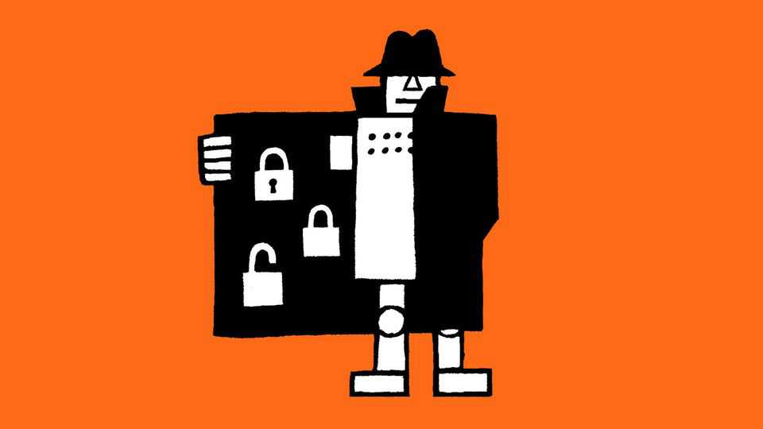

As hackers run riot with AI, its makers want to cash in
OpenAI and Anthropic spy a big opportunity in cyber-security

Nov 5th 2026
There has never been a better time to be a North Korean hacker. Last year the country’s cyber-thieves stole $2bn-worth of cryptocurrency, triple the level two years before, according to Chainalysis, a research firm. This year’s haul is on course to be much bigger. On October 29th $6.3bn was swiped from Binance, the world’s largest crypto exchange. America’s Federal Bureau of Investigation has pointed the finger at the hermit kingdom.
The theft is but one example of a worrying pattern. Recent weeks have brought what looks to be a sharp acceleration in the frequency of damaging hacks. The details behind many remain murky. But what is clear is that advances in artificial intelligence have handed new powers to cyber-criminals, who are using it to churn out malware, execute sophisticated “phishing” schemes and, increasingly, to comb through software code looking for vulnerabilities.
The danger is, paradoxically, a golden opportunity for frontier labs. Sarah Friar, OpenAI’s finance chief, says she thinks cyber-security will become a “huge business” for her company over the next two years. It recently hired an executive from Wiz, an Israeli cyber-security firm owned by Google, to pitch its software to enterprises. Likewise, in paperwork recently filed for its forthcoming stock-market debut, Anthropic, OpenAI’s arch-rival, described cyber-security as “one of our most important near-term opportunities”. Yet cashing in on the cyber-risks posed by AI will be tricky for the model-makers.
Some expect that spending on cyber-security software—which reached $150bn last year, according to IDC, a data provider—will increase dramatically as firms recognise the growing threat. Greg Brockman, a co-founder of OpenAI, recently predicted that in time the figure will “vastly outstrip” spending on all other software. Last month Andreessen Horowitz, a venture-capital firm, urged firms it has invested in to consider doubling their outlays.
For AI labs, detecting cyber-vulnerabilities looks like a strong fit for their technology. Like coding, it is a “verifiable domain” where models can learn from answering questions correctly, explains Nazneen Rajani, chief executive of Collinear AI, which provides model-evaluation services.
Yet success will require persuading companies to rethink how they spend their cyber-security budgets. The business of identifying and patching vulnerabilities is highly fragmented, with customers historically tending to purchase tools from a variety of vendors and hiring IT consultancies to help with implementation. Anthropic and OpenAI are instead pitching the idea of letting their bots roam across an enterprise’s entire code base and fix weaknesses as they are found.
Lately the cyber-security market has been consolidating around a few so-called platforms, including independent vendors such as Palo Alto Networks and cloud giants such as Microsoft. But they also offer tools for other tasks where AI models are currently of less help, such as ensuring only approved users can access systems.
What is more, these incumbents have spent years building trust with their clients. Over the past few months, by contrast, the leading AI labs have had trouble controlling their own creations, with embarrassing episodes such as one in July where an OpenAI system hacked into Hugging Face, a model library, without being told to do so. Some in the cyber-security industry are sceptical that the model-makers will ever be able to forge the relationships needed to become leading cyber-security providers. Instead, the opportunity may lie in distributing their technology through others, while encouraging businesses to rewrite code securely from scratch using their models. The North Koreans will be hoping they fail. ■